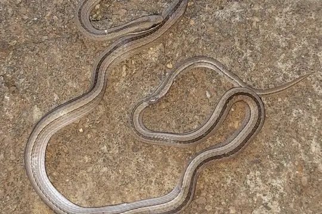

Psomophis
The genus Psomophis (family Colubridae) has 3 species in SnakeList (none venomous), recorded in 5 countries.
- 3species
- 3non-venomous
- 5countries
Species
Showing 3 species
 Spirit Ground SnakePsomophis genimaculatus
Spirit Ground SnakePsomophis genimaculatus Wide Ground SnakePsomophis obtusus
Wide Ground SnakePsomophis obtusus
Psomophis joberti
No snakes in Psomophis match.